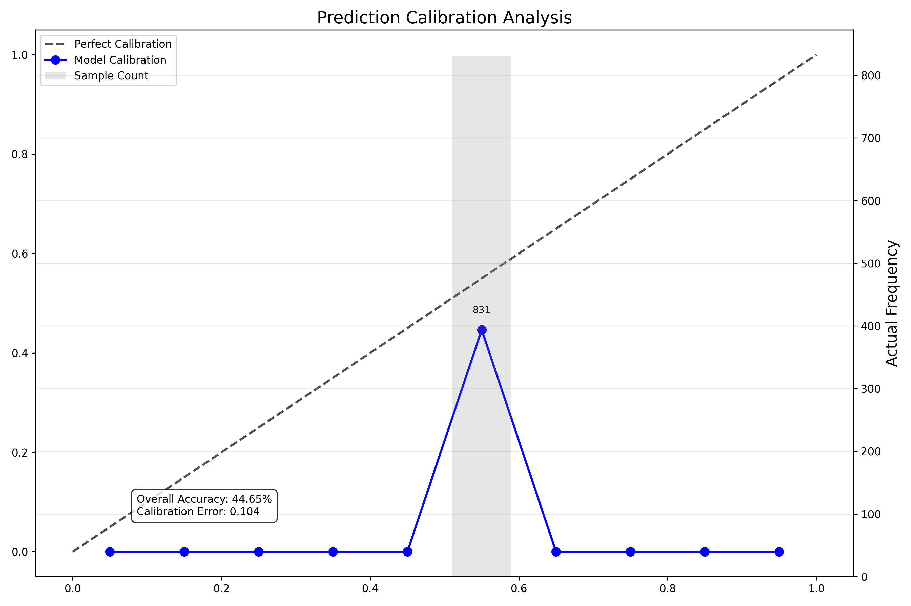
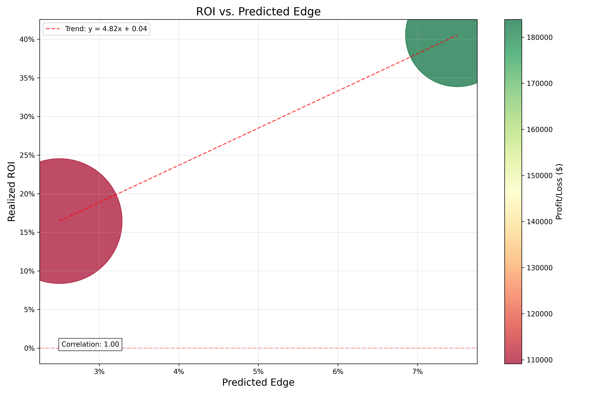
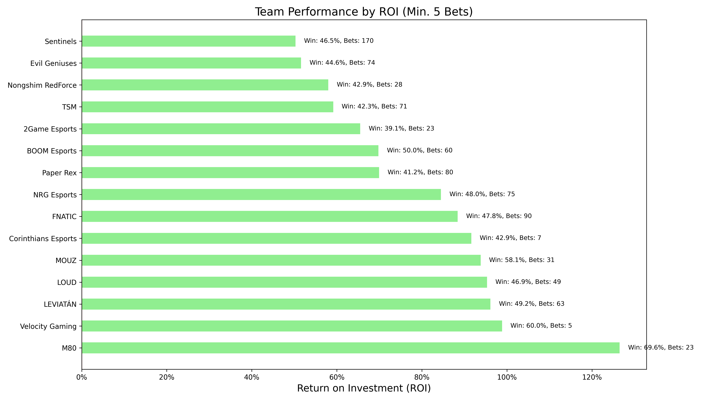
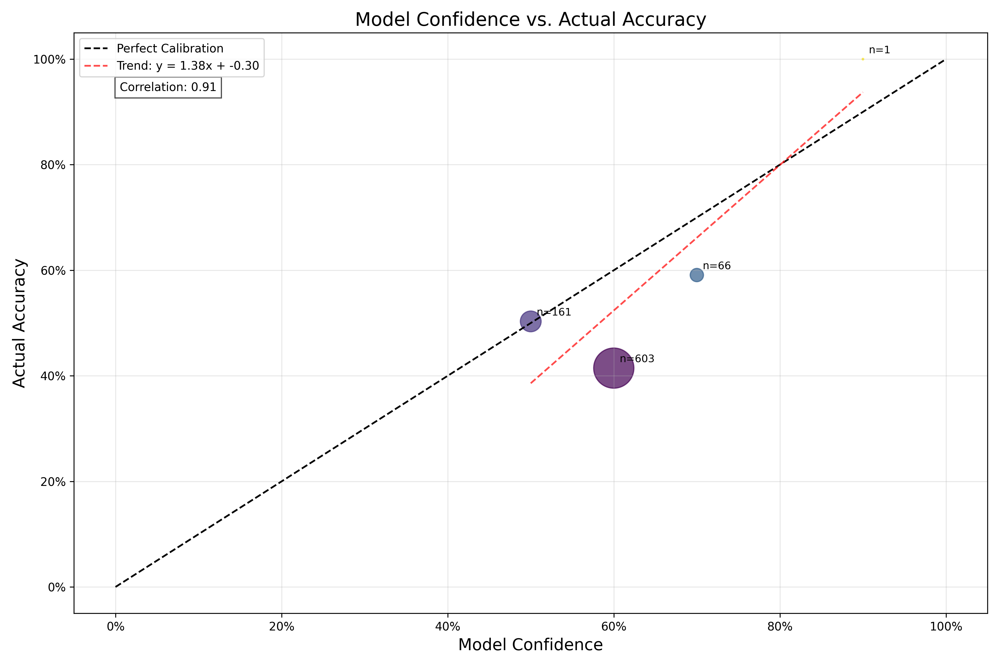
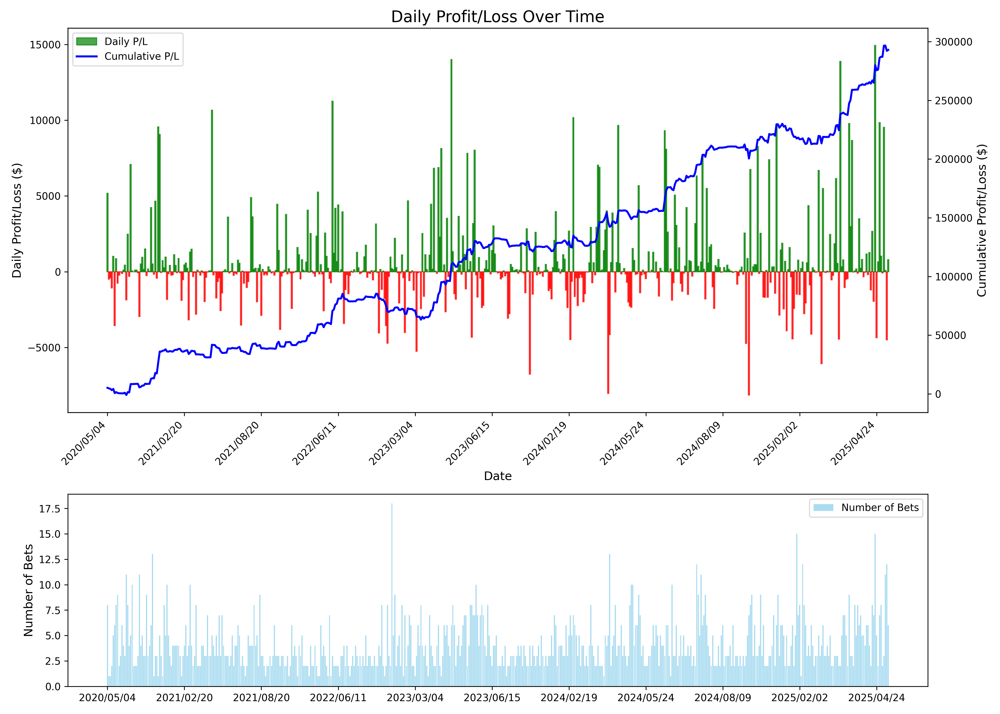

Valorant Match Prediction Backtest Results
Generated on: 2025-05-06 01:39:36
Bankroll History

Shows how the bankroll changed over the course of the backtest. Annotations indicate maximum and minimum points.
Prediction Calibration

Compares predicted probabilities vs. actual outcomes. A well-calibrated model should follow the diagonal line.
ROI vs. Predicted Edge

Shows the relationship between predicted edge and actual ROI. Points are sized by amount wagered.
Performance by Bet Type

Compares win rates and ROI across different bet types, with volume information.
Team Performance

Shows ROI and win rates for teams with at least 5 bets placed, sorted by ROI.
Model Confidence vs. Accuracy

Analyzes how model confidence correlates with actual prediction accuracy.
Daily Profit/Loss

Shows daily profit/loss and cumulative profit over time, along with number of bets placed each day.